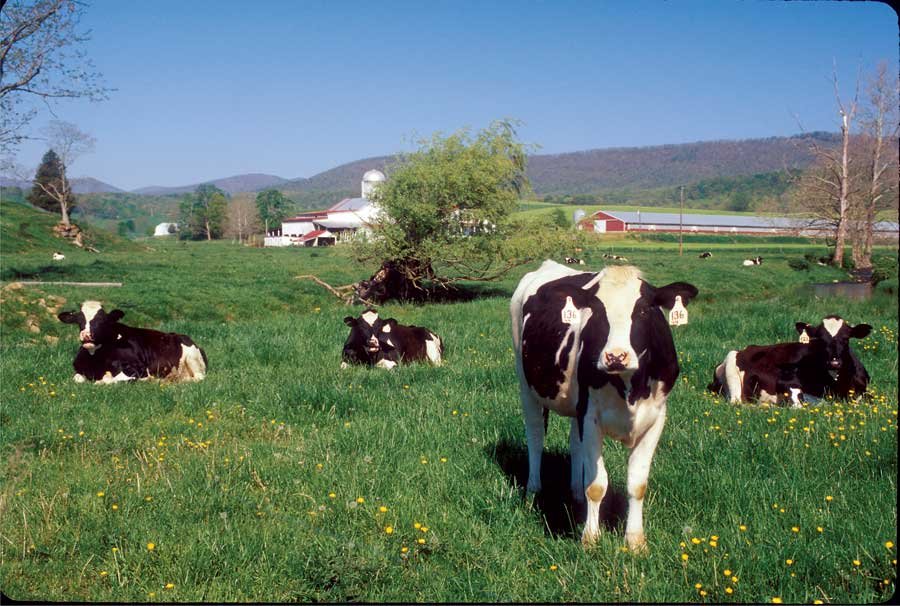
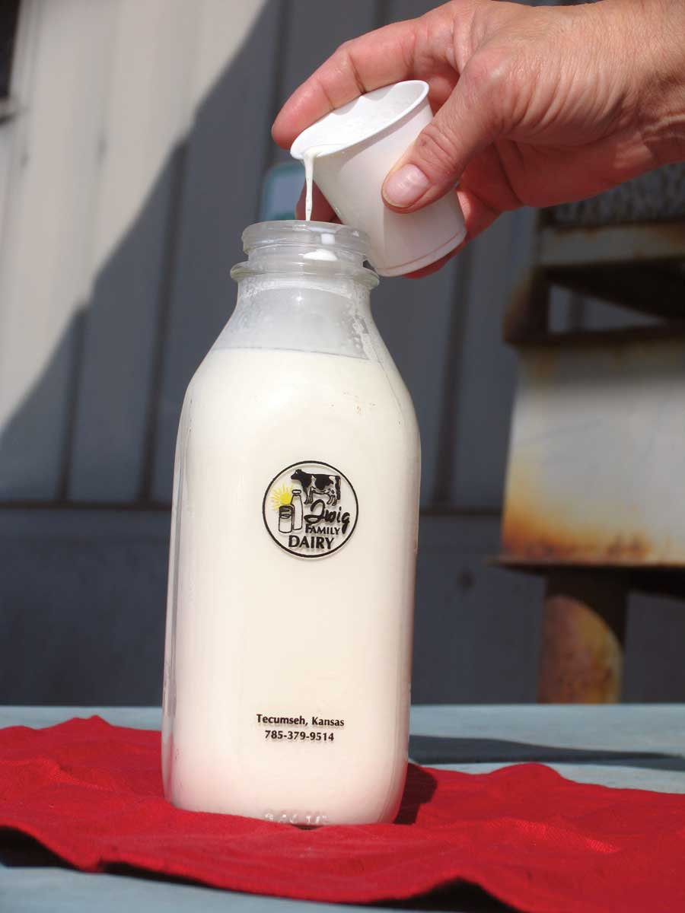
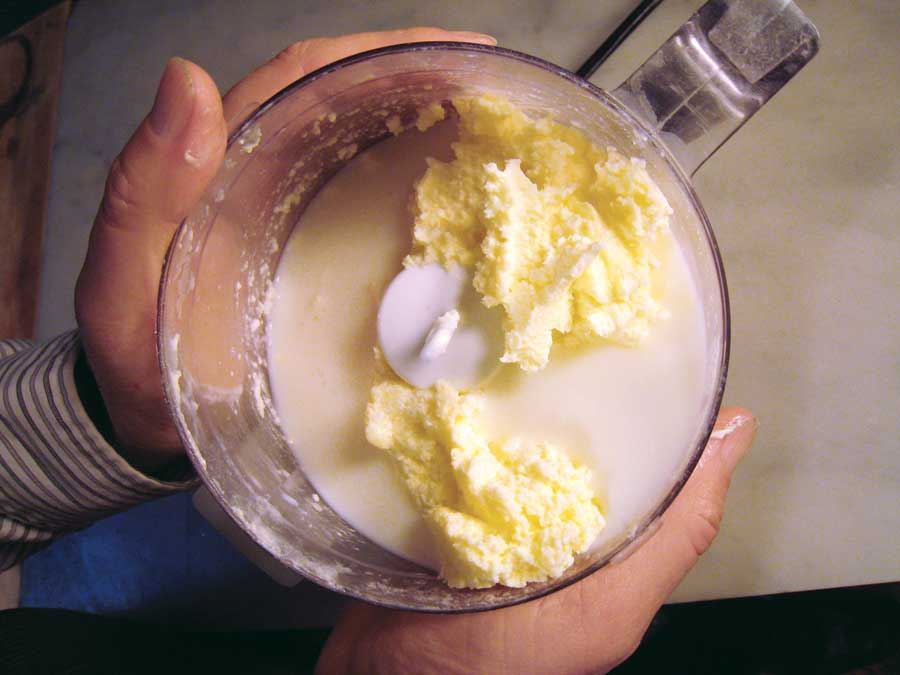
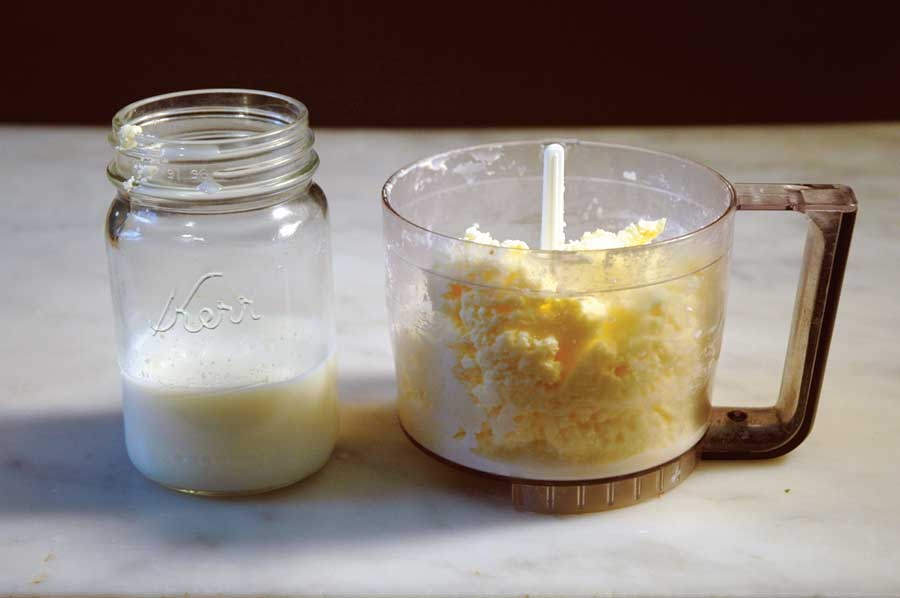
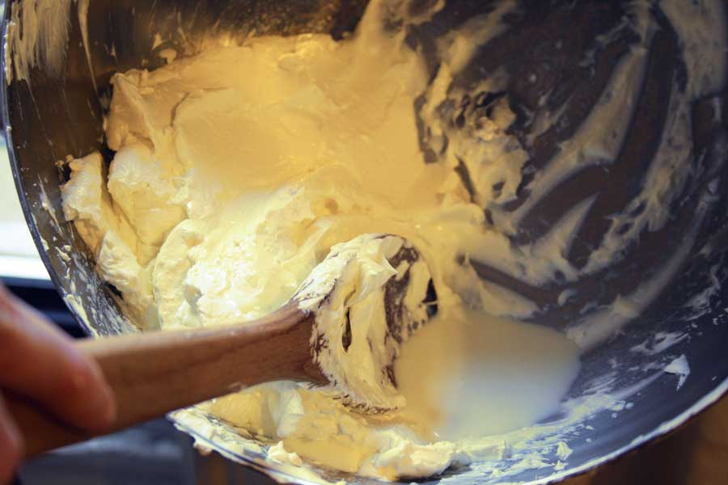
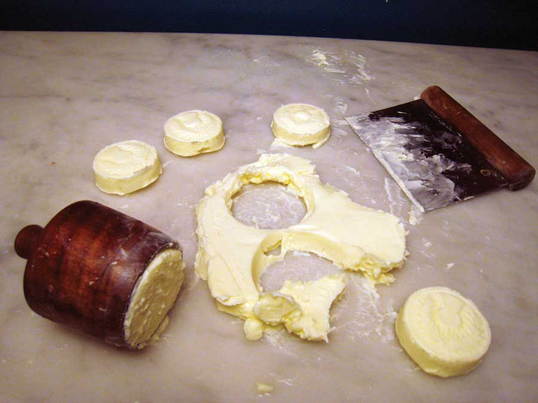

Of the sweet cream butter I’d made earlier in the day, my Italian visitor said, “It tasted heavenly.” Sweet cream butter is churned from cream that has not been acidified by the conversion of milk sugar (lactose) into lactic acid by lactobacillus bacteria. Think of it as butter straight from the cow. The butter I served my friend was unsalted; so, in the slightly confusing language of butter, it was sweet sweet cream butter (not salted and not acidified).
Sweet sweet cream butter is the purest butter - it most cleanly expresses the essence of the underlying cream. It was April when I made dinner for my friend, so the cows were eating from spring pasture. Spring pasture butter is more delicately flavored than the rest of the year, and more yellow because spring and early summer grasses are the most nutritionally complex, containing the highest levels of beta carotene. Indeed, the butter I made for my friend was sweet and bright yellow.
Prior to the industrialization of butter manufacturing in the late 19th century, butter sales were local, and butter customers were connoisseurs in a way that we are not. Early spring butter commanded a higher price than any other. Modern dairy practices ignore seasonal differences by feeding cows an unnatural diet of year-round grain. If you often make butter from good cream, you will notice changes as the seasons progress.
In the 7,000-year history of butter, sweet cream butter is comparatively new. In the few hundred years prior to the industrialization of butter making, cream was cultured before it was churned. Culturing was the consequence of the universal practice of accumulating multiple milkings before churning. There was no refrigeration, so the cream was stored in a cool room.
Because raw cream is naturally full of benign bacteria, raw cream ferments and sours on its own, without the addition of a bacterial culture. Fermentation by lactobacillus bacteria changes the chemistry of cream, making its flavors more complex. Among other changes, it produces lactic acid, making the cream less “sweet.” Of even greater importance to butter makers working hand churns, culturing helps make churned cream “break” faster into the two products of butter making: butter and buttermilk.
When sweet cream butter was first introduced in America in the late 19th century, there was consumer resistance because, as described in one 20th-century text, “Flat flavor is noticeable in butter made from unripened cream.” Now this flat-tasting butter is the standard butter in America, Canada and England. In comparison to cultured butters, sweet cream butter will always taste flat. But it has special qualities of its own. Fresh sweet cream butter is the taste of the cream unmediated by the butter maker. It often has a lovely fresh and milky taste.
Whenever the taste of butter as a condiment is important - such as when spread on bread or melted over vegetables - homemade butter will make a difference you will taste. Where butter is a significant ingredient - such as in bread and pastries - you’ll find an astonishing difference in both the ease of making the pastry and in the texture of the finished product. That’s because homemade butter is usually about 86 percent butterfat. Commercial butter is usually 80 percent butterfat - the government’s minimum standard.
Once you start using homemade butter, you won’t look back. It is so different from commodity butter - even premium “European-style” cultured butters - that they are almost two different foods. As a rule, use homemade butter within a week of making it. For baking, try to use it the same day you make it, before it is refrigerated. The buttermilk, that other product of butter making, is also entirely different from cultured buttermilk. Try it in scones, soda bread, gingerbread, corn bread and pancakes.
Sweet cream butter can be heavenly, but once you begin culturing butter, I predict you’ll find that you like cultured butter even better. Culturing brings depth of flavor to butter, and lets you become imaginatively engaged with manipulating that flavor. With a tiny amount more effort than it takes to make sweet cream butter, you can routinely make butter that crosses the threshold between butter and cheese - butter that tastes so good you literally want to just sit down and eat it.
Commercial culturing is a superficial affair, so don’t imagine any brand you have purchased as a model for cultured butter. Industrial butter is cultured in a matter of hours. At home, you can do much better. Unlike factories, you don’t need to consider the cost of waiting for cream to ripen. And that’s the secret to making extraordinary butter.
Raw cream cultures naturally. Pasteurized cream requires inoculation with an appropriate culture because all the lactobacillus that naturally ferments cream would have been killed in the pasteurization process.
Butter making is an incredibly simple craft. Even a child can churn cream into butter, which is why butter making is a common activity in kindergartens. But as an adult, butter making can be a lifetime project. It is a culinary area that has barely been explored in our modern world. In addition to seeking top quality cream to make the most heavenly sweet cream butter, and the open-ended possibilities with culturing, one can add special flavors, such as savory rosemary or floral rose water.
After tasting a butter I’d made that he found utterly delicious, my killjoy friend said, “But William, no one should be eating butter.” So I will address those of you who have concerns about the healthfulness of butter. In Moby Dick, Ishmael exclaims, “Flask, alas!, was a butterless man.” Flask was also an unhappy man. I say no more on the correlation between happiness and eating delicious butter.
In truth, butter is not the enemy Americans once feared. Researchers have upset the old-fashioned “lipid hypothesis” that blamed heart disease on animal fats. Plus, we are now discovering how incredibly healthy foods from pastured animals can be. Butter from grass-fed cows is higher in many nutrients, including vitamins E and A, beta carotene, and essential fatty acids.
If you can find cream from pastured cows, your butter will also be more luscious and spreadable than you can get using cream from grain-fed cows.
So, how do you make butter so good that those who taste it always want more? Up until recent times, people - mostly mothers - had been expert butter makers. The break in this tradition is exceedingly recent. So let’s teach ourselves this ancient and elegant craft. The following are general guidelines for those of you who don’t have a mother or a friend to show you.
Butter is made from cream. You get the greatest yield from cream with the highest fat content. In America, that’s “heavy whipping cream,” and the commercial grades “extra-heavy” or “manufacturer’s” cream have even more butterfat. Plus, different cow breeds produce different percentages of milk fat. The most common U.S. dairy cow, the Holstein/Friesian, produces milk that has 31 percent less fat than Jersey cows. Jersey cream is widely regarded as the ideal cream for butter making. If you are lucky, you can find a source nearby. (Search for one at Local Harvest.)
To taste the ancient taste of butter, you have to use raw cream. Raw cream is biologically active: It comes inoculated with beneficial local bacteria. When milk fresh from a cow sits for a while, the cream rises to the top. For thousands of years, all there was to separating cream from milk was spooning it off the top. Then it was allowed to sit and ferment.
But when it comes to pasteurized cream, even the most mass-produced stuff yields yummier butter than any butter you can buy. Let taste be your guide. If possible, make butter from two different dairies, and compare the results in blind tastings. This will help you develop your palate and focus on taste, rather than labels. If you can find and afford it, test cream from the smallest local dairy that offers cream from a single herd and pasteurizes at the minimum temperature. You will then have the best chance of tasting a butter “varietal,” such as Jersey.
Pasteurized cream must either be used for sweet cream butter or be purposefully cultured. You can’t let pasteurized cream sour naturally, as you would raw cream. Pasteurization kills all bacteria, even the beneficial natives. So, if you were to let that cream sour, you would be allowing a blank slate to absorb any ambient bacteria that might be lurking, without the natural defenses to control it.
Butter cultures are “mesophilic,” meaning the bacteria thrive in cool temperatures. (“Thermophilic” yogurt cultures require higher temperatures.)
You can buy mesophilic cultures from suppliers (New England Cheesemaking Supply is a good source), but there is no reason you must. You can culture cream effectively by inoculating it with a little store-bought sour cream, buttermilk or crème fraiche. (Just make sure it says it contains live cultures.)
If you have a methodical mind, take notes on what you do, including tasting notes. If you’re like me, just go with your gut. Either way, you’ll consistently make butter that is far superior to commercial products, even premium imported butters.
A churn is anything that can agitate cream until the butterfat comes out of suspension, resulting in butter and buttermilk. It can be as simple as a mason jar (shake and pass around a circle of friends), or as easy as a food processor or electric mixer. Small hand churns are practical for home use, holding a pint to a quart of cream. The most common types are a paddle churn (a paddle in a jar) or a plunger churn (a wooden plunger in a wooden cylinder). You can find churns at Lehman’s, Homesteader's Supply, Ebay and Craigslist.
1. Pour sweet or cultured cream into the churn, leaving headroom for the cream to expand when whipped.
2. Begin churning. As you churn, cream goes through three distinct phases. First, it becomes a snowy white whipped cream, then turns yellow and granular, and lastly “breaks” into clumps of butter swishing around in buttermilk. Churn a bit longer to be sure the butter has clumped, then stop. Observe what is happening throughout. Look, listen and feel what happens as the cream goes through these phases so you develop an intuitive feel for the butter-making process and your own equipment. Cream churns best between 50 and 60 degrees Fahrenheit, but will break eventually even if it’s warmer. And cultured cream breaks faster than sweet cream.
3. Drain the buttermilk to reserve for baking. Remove the butter from the churn to a steep-sided bowl. Hold the bowl at a steep angle, and gather the butter into a ball. Using the flat of your fingers or the back of a wooden spoon, spread and press it against the side of the bowl to squeeze out buttermilk. Still using the flat of your fingers or the spoon, fold the butter in half over itself, and press down again. Repeat until little or no buttermilk squeezes out. When done, remove the butter to a plate, drain the buttermilk into your buttermilk container, rinse the bowl, return the butter to the bowl, and cover with cool water.
4. Wash the butter covered in cool water using the flat part of your fingers or the back of a spoon. Repeatedly press, fold and turn to wash the butter free of buttermilk. Change water as needed, until it remains clear. Another option is to replace the last change of water with a flavored water - rose water for butter to be used in sugar cookies or shortbread, or salted water in which a sprig of rosemary was boiled, for an unusual savory butter circa 1615. Remove the butter to a plate, wash your hands, and drain the bowl. Note: If you are working with a large quantity of butter, an effective alternative to hand washing is to return the butter to the churn and churn with repeated changes of cool water until it runs clear.
5. To remove the rest of the water, return the butter to the bowl and hold it at a steep angle. Use the back of a spoon to spread and re-spread the butter repeatedly against the side of the bowl to force out trapped water. When no further water can be pressed out of the butter, remove to a plate. Note: If seasoning butter with salt, sprinkle it onto the butter at the beginning of this step. I suggest erring on the side of undersalting and would not exceed 1 percent salt, which is a scant one-quarter teaspoon per 4 ounces of butter.
6. Eat up! The butter can now be used immediately. It will be soft and supple. Always wrap butter before refrigerating. Parchment paper makes a nice wrapping. Try to use the butter within a week. Homemade butter is rarely washed free of buttermilk as effectively as commercial butter, and thus seldom stores well. Homemade butter freezes well, but the point of homemade butter is to use it when it’s fresh!
Traditional Scottish Shortbread Recipe, Featuring Homemade Butter
|
 PAT AND CHUCK BLACKLEY Making butter is easy, healthy, delicious and satisfying. And spring and summer pastures yield the most delectable homemade butter - if cows get to eat the grass! |
 MADELINE HYDEN Making butter is incredibly simple. How to Make Butter Step 1: Culture the cream for cultured butter. (This step is optional. If you forgot culturing the cream, you will end up with sweet cream butter.) |
 WILLIAM RUBEL How to Make Butter Step 2: Next, you churn butter out of the cream. It’s fun and practical to use small hand churns, but food processors make great butter, too. |
|
 WILLIAM RUBEL How to Make Butter Step 3: After the butter has broken out of the cream, you can drain off the buttermilk. Be sure to save it for delicious buttermilk recipes! |
 TABITHA ALTERMAN How to Make Butter Step 4: Now press out even more buttermilk with the back of spoon or your clean hands. You want to remove as much buttermilk as possible to prevent your fresh butter from going rancid. |
 WILLIAM RUBEL How to Make Butter Step 5: After you have rinsed your homemade butter in cold water (until it runs clear), you can shape and mold the butter if you wish. This step is optional, but fun! |